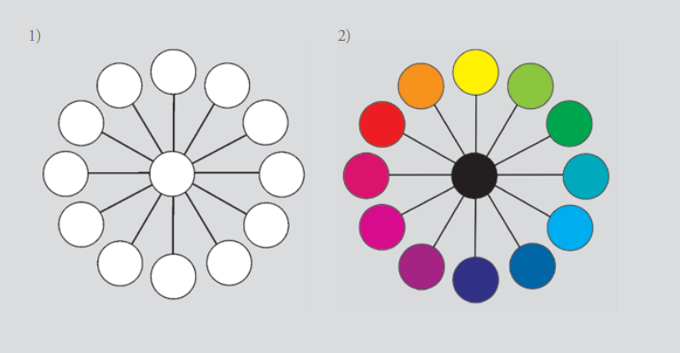

O QUE É COR?
Explore o universo das cores, suas propriedades físicas, percepção visual e aplicações na arte, design e tecnologia.
Explore o universo das cores, suas propriedades físicas, percepção visual e aplicações na arte, design e tecnologia.


A cor é uma percepção visual produzida pela ação da luz sobre os olhos.
Ela está diretamente relacionada às ondas eletromagnéticas visíveis e
desempenha papel fundamental na comunicação visual, arte, design e tecnologia.
Cada cor possui características próprias e pode transmitir emoções,
sensações e significados diferentes. O estudo das cores envolve aspectos
físicos, psicológicos e culturais.
Os processos para o resultado de qualquer sensação cromática nesta tríade específica de
cores-pigmento são dois: a mistura óptica das luzes refletidas por pequenos pontos colocados
muito próximos uns dos outros, como utilizavam os impressionistas pontilhistas, e a mistura
dessas mesmas luzes coloridas refletidas pelos pigmentos, colocados em discos rotativos. No caso
das cores-pigmento primárias opacas (vermelho, amarelo e azul), o preto (que teoricamente é o
resultado da mistura das três) só ocorreria se o amarelo absorvesse completamente as outras
faixas coloridas da luz branca incidente e refletisse somente a soma do verde e do vermelho (G +
R), e o mesmo acontecesse com o vermelho e com o azul.
A cor-luz é formada pela emissão direta da luz, utilizando principalmente o sistema RGB (vermelho, verde e azul).
A cor pigmento está relacionada à absorção e reflexão da luz em tintas, papéis e objetos físicos.
O olho humano percebe apenas uma pequena faixa do espectro eletromagnético chamada luz visível.
CÍRCULO CROMÁTICO EM COR-PIGMENTO TRANSPARENTE.
Objetivo: construir um instrumento para se pensar os esquemas de combinações de cores possíveis, um
Círculo Cromático. Será a partir das cores-pigmento transparentes, pois são as cores que se consegue
em tinta.
Material: folha para guache, tintas guache nas cores magenta, ciano, amarelo e preto. Descrição:
desenhar um círculo com doze cores, primárias, secundárias e terciárias em cores- -pigmento
transparentes, dispostas segundo a teoria
